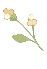
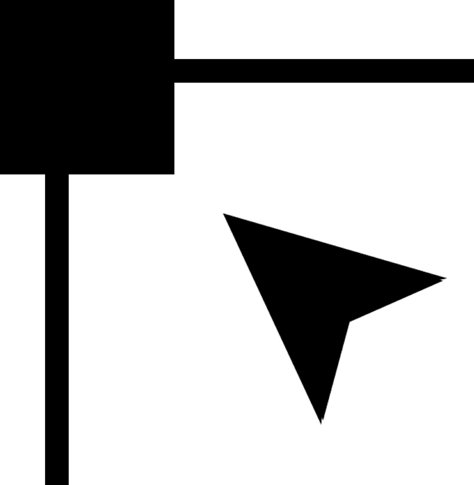
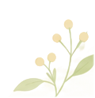

FLAT
MOTION
ベクターアニメーションスタジオ
↶
戻す
↷
進む
吸着 ON
▦
全体表示
−
100%
＋
新規
開く
保存
書き出し

⠿
≡
−
▦ 1列／2列を切り替え
↺ パレット位置を初期化
選択
切り抜き
グラデーション

頂点
ベジェ塗り
ベジェ線画
直線
フリーハンド
✎
ラフ作画
四角形
楕円
△
三角形
T
テキスト
メッシュ
回転軸
手のひら
レイヤーメニュー
×
レイヤー透明度
100%
レイヤーを選択してください
◇ 選択レイヤー／フォルダーをクローン
元フォルダーの図形を1つの統合オブジェクトとして表示。内部境界は消し、クローン側のアウトラインは外周だけに適用します。
◇ シェイプ形成 / パスファインダー
▸
◇ シェイプ形成 / パスファインダー
チェックで2個以上選択
合体
前面型抜き
交差
分割
元の図形を残す（非表示にする）
アートボード
960 × 540
▤
タイムラインを閉じる
▾
❯
プロパティを閉じる
✒ パス作成中
0 点
塗りを確定
開いた線で確定
↶
✕
ここから、アニメーションのイラストをつくりましょう。
上部のツールで形を描いたり、SVG（ベクター）を読み込んだりできます。
サンプルを試してみる

＋ タイムラインに素材を追加
すべて削除
編集データはブラウザ内でも保存されます
SVG / ベクター・ブラウザ内で動作
タイムライン
▾ 閉じる
|◀
▶
▶|
00:00 / 00:06
自動キー
前フレーム
次フレーム
＋ 音声
◆ キー追加
◇ 削除
♪ 音声クリップは左右ドラッグで移動 ／ ◆ 位置・回転 ／
● 頂点
／
■ メッシュ
（ドラッグでキー移動）
FRAME 000 / 072
SUB VIEW
資料・カラー抽出
×
＋ 画像を追加
‹
0 / 0
›
×
参考画像を開く
PNG・JPG・WebP・GIF・BMP
複数枚を切り替えて表示できます
画像を読み込む
ドラッグ＆ドロップも対応
スポイト
手のひら
−
100%
＋
全体
#C78B7B
画像をクリックして色を取得
コピー
書き出し形式
静止画 PNG
現在のフレーム
レイヤー PSD
グループとクリッピング保持
ベクター SVG
レイヤー階層を整理して出力
アニメーション HTML
単体で再生できる
PNG連番 ZIP
透過対応・編集ソフト向け
動画 WebM
音声トラックも含む
設定
✕
▧ 3D下書きワークスペース
複数モデルを組み合わせてアタリを作成
✕
3D VIEW
モデル未選択
↶ 戻す
↷ 進む
✋ ハンド
✥ 移動
⟳ 回転
◉ カメラ
回転方向
縦（X）
横（Y）
傾き（Z）
ドラッグ：視点角度を変更／右ドラッグ：視点移動／ホイール：ズーム